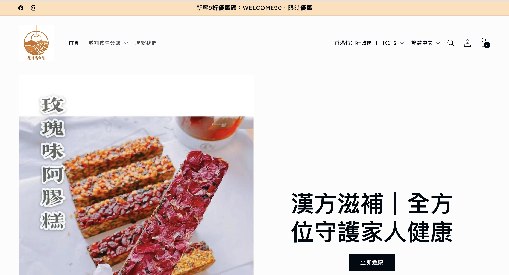
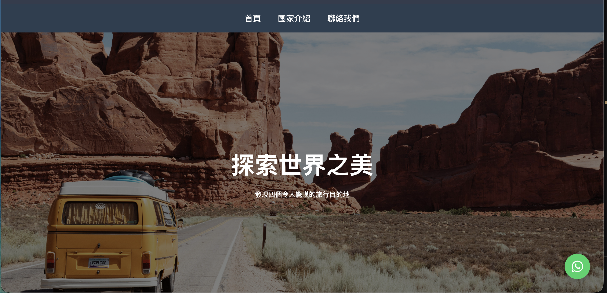
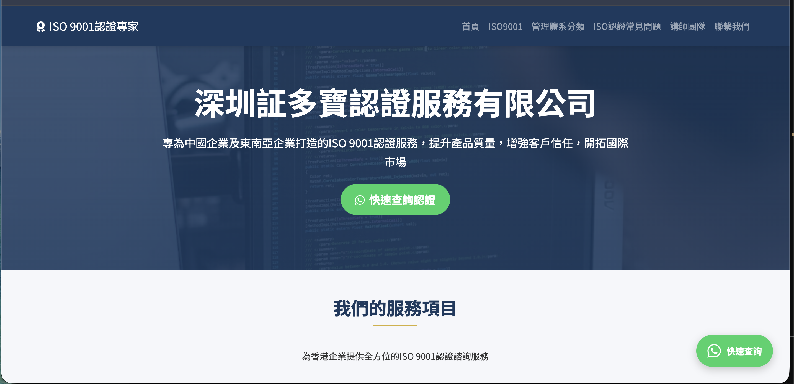
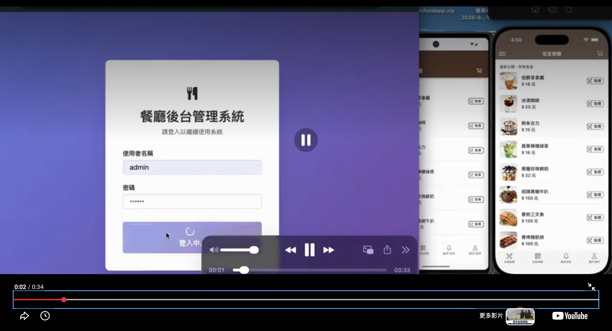
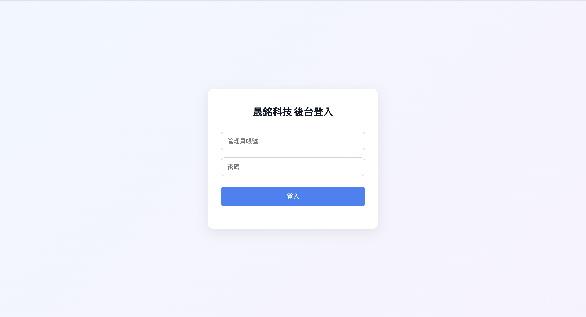

逆境，是最好的開發期。
您好，我是 Coco Yao，一名生活在香港的獨立全棧網頁與 App 個人開發者。
過去我做過很多份不同工作，通過持續學習，成為了自由職業者。最近一場突如其來的骨折受傷，讓我不得不留在家中療養。
身體的限制反而徹底解放了我的專注力。我決定化焦慮為拼勁，收回所有通勤與社交的時間，每天 10 小時以上 200% 專注於代碼研發。
我是一人軍隊，能為您的中小企或初創團隊帶來三大核心承諾：
- 拒絕罐頭套版 (No Templates)：我精通 Next.js / Angular 前端、PHP + MySQL 後端與 HTML5/CSS3 基礎，拒絕廉價模板套版。
- 一套代碼，雙端交付：我精通跨平台原生技術，一套代碼同時交付 iOS 與 Android，直接為您省下 50% 外包預算。
- 研發至變現閉環：我兼具 Meta、Google 與 YouTube 精準投流實力。不只寫代碼，更從底層埋好 Pixel 與 CAPI 追蹤，用數據幫您開拓線上客源
這裡沒有大公司的層層轉包與行政溢價。您與我直接對接，溝通最透明、修改最即時，每一分預算都實打實地轉化為高質量的商業增長系統。
身體正在慢慢恢復，而我為您用代碼構建商業系統的腳步，現在就可以開始。
Adversity is the best development period.
Hi, I'm Coco Yao, an independent full‑stack web & App engineer based in Hong Kong.
I used to work regular 9‑to‑5 office jobs. A recent unexpected fracture disrupted everything, forcing me to recover at home and step away from traditional employment.
Losing mobility brought anxiety, yet as a developer my instinct is to solve problems. I turned setbacks into opportunity. Physical limits freed my focus, so I founded my independent dev studio and take full‑time freelance projects.
I can devote 200% focus to deliver for you. As an individual developer, I offer three guarantees big companies cannot match:
- No canned templates: Proficient in Next.js(React) and Angular, plus PHP & MySQL backend. Every line is hand‑written from HTML/CSS base to complex enterprise systems, no cheap templates.
- One codebase, two platforms: Cross‑platform native App development. One budget delivers both iOS(App Store) and Android(Google Play), saving startups up to 50% outsourcing cost.
- Genuine cost‑efficiency: No multi‑layer outsourcing or heavy corporate overhead. You communicate directly with me. Every dollar you spend goes toward high‑quality code.
Real capability is proven by working products. All featured projects below are built entirely by me, with public live demos you can test right now.
My injury heals slowly, yet I’m ready to start building your business system with code.
精選作品
Selected Works
探索我們為各行業領袖打造的高效能科技產品。
Explore high‑performance tech products built for industry leaders.

作品 1｜購物網站（Shopify 架構）
Quantum AI Analytics Platform
前端：HTML5 + JavaScript + CSS，以 Shopify 原生架構搭建； 使用 Shopify 生態完成商品、購物車、訂單、會員整套電商邏輯，無需自行開發後端與資料庫，快速落地商用購物網站。
Real‑time risk prediction & visual dashboard powered by cutting‑edge ML for multinational finance.

作品 2｜Trip 旅遊網站
AeroCloud Collaboration System
前端：HTML5 + JavaScript + Tailwind CSS，純展示型網站，響應式景點、行程介面； 僅靜態展示頁面，不含自訂後端、數據庫，電腦手機均可正常瀏覽。
High‑concurrency enterprise SaaS to boost remote‑team efficiency worldwide.

作品 3｜ISO 展示官網
ISO Showcase Website
前端：HTML5 + JavaScript + Tailwind CSS； 純靜態企業展示官網，做 SEO 優化，展示企業資訊、認證證書，頁面載入速度快，無後端資料庫。
Decentralized security network for premium e‑commerce & Web3 projects.

作品 4｜前後端分離點餐 App（影片展示）
Work Title 4
APP 端：原生架構，一套架構可同時編譯輸出 iOS、Android 雙平台應用； 後端：PHP 開發 RESTful API； 數據庫：MySQL，處理菜單、訂單業務邏輯，標準前後端分離架構，手機端優先。
Work description placeholder.

作品 5｜表單型網站前台
Work Title 5
前端：HTML5 + JavaScript + Tailwind CSS，內建前端表單驗證； 後端：PHP API 負責接收提交資料； MySQL 存储客戶諮詢數據，後台支援數據查閱與檔案匯出，中小企業詢價諮詢場景。
Work description placeholder.

作品 6｜企業後台管理系統登入介面
Work Title 6
前端：HTML5 + JavaScript + Tailwind CSS； 後端：PHP 實現 Session 身份驗證、權限攔截； MySQL 管理管理員帳號權限，可銜接各類業務後台模塊。
Work description placeholder.
服務項目
Our Services
全方位的軟體工程與技術支援。
Full‑range software engineering & technical support.
🌐 1. 網頁前端開發 (Web Frontend) —— 雙主流架構🌐 1. Web Frontend — Dual mainstream architecture
從最底層的紮實基本功，到現代高效能的前端渲染，提供完美流暢的用戶體驗：
先進前端框架：精通 Next.js (React) 網頁高性能渲染，以及 Angular 企業級架構。不論是注重 SEO 的極速品牌官網，還是高複雜度的企業管理後台（CMS/Dashboard），皆能精準交付。
核心開發基礎：精通 HTML5 / CSS3 / JavaScript (ES6+) 原生開發，採用標準語義化代碼，確保網站結構穩固、代碼輕量、加載極速。
視覺與響應式：深諳 Tailwind CSS 與響應式網頁設計（RWD），確保網頁在 iPhone、Android 手機、iPad 及 PC 電腦屏幕上皆能完美適配，畫面絕不走樣。
Solid low‑level foundation plus modern high‑performance rendering for smooth user experience.
Skilled in Next.js(React) high‑speed rendering and Angular enterprise‑grade framework. Deliver SEO‑friendly brand sites and complex enterprise dashboards.
Pure HTML5/CSS3/JavaScript(ES6+) semantic coding for lightweight, fast‑loading pages.
Tailwind CSS & responsive RWD design, perfect display across iPhone, Android, iPad and desktop PC.
📲 2. 流動端 App 開發 (Mobile Application) —— 雙平台原生交付📲 2. Mobile App Development — Cross‑platform native delivery
打破傳統大公司分開開發的昂貴壁壘，用尖端的跨平台原生技術為客戶創造最高性價比：
跨平台原生研發：精通現代流動端跨平台開發技術。
一套代碼，雙端交付：只需一次開發預算，即可一人同時完美交付 iOS (App Store) 與 Android (Google Play) 雙系統原生應用。
商業核心價值：比起傳統分開尋找 iOS/Android 工程師，能為中小企及初創團隊直接節省高達 50% 的外包本金與開發週期。
Break high cost barriers of big‑company separated development.
Master modern cross‑platform native mobile technology.
One single budget delivers native iOS(App Store) plus Android(Google Play).
Save up to 50% outsourcing budget & development cycle for startups and SMEs.
🗄️ 3. 後端與數據庫 (Backend & Database) —— 穩固的數據鐵三角🗄️ 3. Backend & Database — Reliable data infrastructure
拒絕廉價、不安全的罐頭系統，以最成熟、穩定的企業級架構保障核心資安：
後端核心開發：精通 PHP (Laravel / 核心架構開發) 兩大核心，確保系統邏輯嚴謹、具備高併發處理能力且易於長期維護。
數據庫設計：深諳 MySQL 數據庫的高擴展性設計、索引優化與高效查詢。
系統資安防護：精通 RESTful API 安全整合、嚴格的資料加密與防 SQL 注入技術（SQL Injection Prevention），確保企業的核心商業客戶資料絕不外洩。
Reject cheap unsafe template systems. Mature enterprise‑grade architecture for data security.
PHP(Laravel) backend development for strict logic, high concurrency and long‑term maintainability.
MySQL scalable schema design, index tuning and efficient query.
Secure RESTful API integration, data encryption and SQL‑injection protection to safeguard business data.
☁️ 4. 雲端部署與監控 (DevOps & Cloud) —— 一站式託管運維☁️ 4. DevOps & Cloud — All‑in‑one hosting & maintenance
不只負責寫代碼，更能一人搞定上線與安全防護，解決客戶的長期運維焦慮：
雲端架構部署：熟悉 AWS、GCP 雲端伺服器搭建、負載平衡及高安全性防護配置。
現代化託管：精通採用 Docker 容器化技術，並熟練運用 Railway 等現代雲端平台進行極速託管、部署與 7x24 小時的雲端效能監控。
Not only coding, but full deployment & security to remove long‑term maintenance worries.
AWS/GCP server setup, load‑balancing and hardening.
Docker containerization, Railway and modern platforms for fast deployment plus 7×24 performance monitoring.
🚀 5. 商業精準投流與流量增長 (Growth Hacking & Ad Optimization) —— 研發到變現閉環🚀 5. Growth & Ad Optimization — Build‑to‑monetize full loop
【市場罕見優勢】 拒絕只寫代碼的「工具人」定位，擁有從 0 搭建系統到精準獲客的商業落地能力：
Meta 全渠道投流：精通 Meta Ads（Facebook & Instagram） 廣告投放。利用全棧技術優勢，親手在代碼層完美對接 Meta Pixel 與 Conversion API (CAPI)，突破第三方隱私限制，精準追蹤用戶行為（漏斗模型優化），大幅提升 ROAS（廣告投資回報率）。
Google & YouTube 關鍵字與影音投流：深諳 Google Ads 精準關鍵字（Search）、PMax 全景廣告及 YouTube 影音廣告投放。結合前端 Next.js / HTML5 的極致 SEO 代碼優化，打造「自然搜尋流量 + 付費精準流量」的雙引擎增長模式。
數據驅動決策：熟練運用 Google Analytics 4 (GA4)、Google Tag Manager (GTM) 進行深度的漏斗轉化率分析，用真實的商業數據（非虛榮指標）幫老闆增加網店（E‑commerce）與 App 的營業額。
【Rare advantage】More than pure coding engineer: end‑to‑end capability from zero‑to‑build to customer acquisition.
Meta Ads(Facebook/Instagram), native‑code Meta Pixel & Conversion‑API integration to bypass privacy limits, track funnels and lift ROAS.
Google Ads Search, PMax & YouTube ads, plus Next.js / HTML5 SEO optimization for organic + paid dual‑engine traffic growth.
GA4 & GTM funnel analysis. Use real business metrics to boost e‑commerce & App revenue.
常見問題 (FAQ)
FAQ
項目週期取決於複雜度。一般中小型企業應用約需 4 至 8 週，而大型 AI 系統整合則需 3 個月以上。我們會在需求評估階段提供精準的時間表。
Depends on complexity. Small‑medium:4‑8 weeks; large AI integration:3+ months. Exact timeline given after requirement review.
是的，所有交付的軟件均享有完善的售後保固期，並提供 7x24 的雲端監控與長期的技術升級維護方案。
Yes, all delivered software includes warranty, 7×24 cloud monitoring & long‑term upgrade/maintenance options.
我們在合作前會簽署嚴格的保密協議 (NDA)，且所有代碼資產在交付後全權歸客戶所有，確保最高的安全性。
Strict NDA signed before cooperation. All code assets fully belong to client upon hand‑over.
聯絡我們
Contact Us
填寫以下表單，我們的資深架構師將在 24 小時內與您聯繫。
Fill the form, our senior architect will contact you within 24 hours.